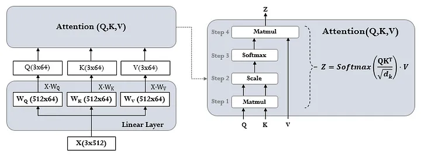
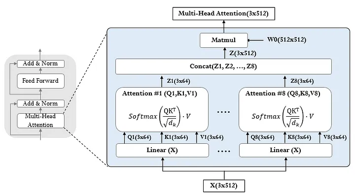

[논문 리뷰] Attention Is All You Need[2]: Attention
자연어 분야의 핵심 논문 중 하나인 Attention Is All You Need을 리뷰한다. 어텐션 알고리즘과 모델 아키택처를 그림과 코드를 통해 이해하고, 병렬성 관점에서 살펴본다.
#NLP#Paper
Attention
- Attention이란 query를 key-value 쌍에 매핑하는 것
- query와 key의 유사도를 구해 가중치를 구함
- 이를 해당 key의 value 값 가중치로 사용
- output 값은 value의 가중치 합
Scaled Dot-Product Attention

$$ \text{Attention}(Q, K, V) = \text{softmax}\left(\frac{QK^T}{\sqrt{d_k}}\right)V $$
- 쿼리(Q), 키(K) 벡터들의 도트 프로덕트를 $\sqrt{d_k}$로 나눈 후 소프트맥스 적용하여 가중치 구함
- 값(V)들의 가중합으로 어텐션 출력값 계산
Multi-Head Attention

- 쿼리, 키, 값을 각각 서로 다른 선형 변환하여 h개의 병렬 어텐션 계산
- 각 어텐션 헤드는 Scaled Dot-Product Attention 수행
- 모든 헤드의 출력값들을 연결하고 최종적으로 선형 변환
- 의의
- 다중 헤드를 통해 서로 다른 위치에서 다양한 정보에 주목 가능
- 병렬 연산으로 성능은 유지하고 연산량을 줄임: 논문에서는 8개의 헤드를 두고, 차원을 512/8 = 64로 낮춤
Applications of Attention in Transformer
인코더의 셀프 어텐션 레이어
- 키, 값, 쿼리가 모두 인코더의 이전 레이어 출력에서 옴
- 인코더의 각 위치가 이전 레이어의 모든 위치에 주목 가능
디코더의 셀프 어텐션 레이어
- 디코더의 각 위치가 해당 위치까지의 모든 디코더 위치에 주목
- 마스킹을 통해 후행 위치 정보가 유출되는 것을 방지
디코더의 인코더-디코더 어텐션 레이어
- 디코더의 이전 레이어에서 쿼리가 오고, 인코더 출력에서 키와 값이 옴
- 디코더의 모든 위치가 입력 시퀀스의 모든 위치에 주목할 수 있음
- seq2seq와 작동 방식 유사